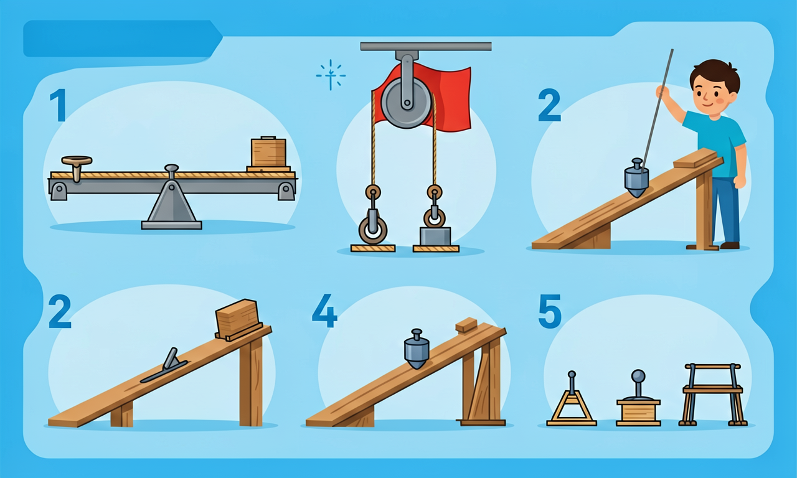
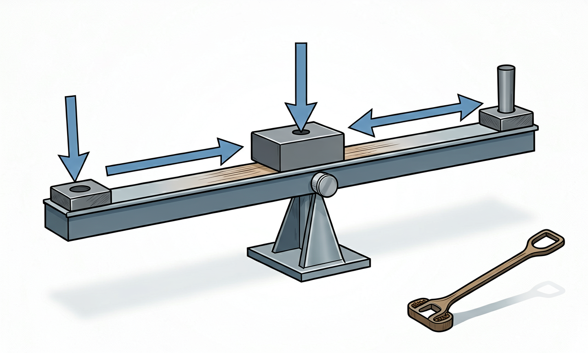
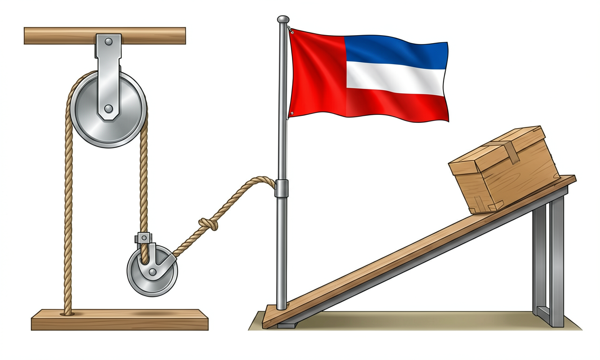

为什么一根撬棍能撬动大石头？今天我们认识杠杆、滑轮和斜面这三位"省力小能手"。

选择或输入后，这节课会围绕你的问题展开。
工人要把一块大石头撬起来，他用一根长撬棍，把支点（垫的小石头）放在靠近大石头的位置。这样做的好处是什么？
先选一个，错了正好暴露你的前概念，我们一起纠正。
一根硬棒，在力的作用下能绕着一个固定点转动，这根硬棒就是杠杆。杠杆上有三个关键位置：固定不动的支点、我们用力的地方叫动力、要克服的重物叫阻力。从支点到动力作用线的距离是动力臂，到阻力作用线的距离是阻力臂。
杠杆有一个不变的规律：动力×动力臂 = 阻力×阻力臂。所以只要让动力臂比阻力臂长，我们就能用较小的力撬动很重的物体——这就是"省力杠杆"，撬棍、起钉锤都是。也有"费力杠杆"，比如钓鱼竿、镊子，它们费了力却换来更灵活、更快的移动。

在「力和运动基础」模拟里，给物体施加推力，观察它如何启动、加速和停下。联系本课：哪些力在帮忙，哪些力在阻碍？
💡 打开摩擦力显示，比较粗糙地面与冰面上的推动效果。
拖动滑块改变支点位置，观察撬起同一块石头需要的动力如何变化。想一想：支点离石头越近还是越远更省力？
当前需要的动力：中等。把支点拖近石头，动力臂变长，会更省力。
滑轮分两种：固定在高处不动的叫定滑轮，它不省力，但能改变用力的方向——升国旗时往下拉绳子，旗子却往上走，靠的就是定滑轮。跟着重物一起移动的叫动滑轮，它能省一半的力，但你要多拉一倍长的绳子。把它们组合起来就是滑轮组，既省力又方便。
斜面是最朴素的机械：把重物沿着斜坡推上去，比直接竖直举起省力得多。斜面越平缓（越长），越省力，但要走的距离也越长。盘山公路绕来绕去、楔子、螺丝钉的螺纹，本质上都是斜面。

解释题：搬运工要把一桶水搬上卡车，他没有直接抱上去，而是搭了一块长木板，把水桶推上去。请你解释：为什么用木板（斜面）会更省力？省力的同时付出了什么代价？
提示与错因分析：常见误区是以为"机械能凭空省功"。其实斜面省的是力不是功——木板越长越平缓，需要的推力越小，但推的距离变长了，做的总功不变。如果你只写了"斜面省力"却没提到"要走更长的距离"，说明还没理解"省力必费距离"这个关键。
设计题：请为学校图书馆设计一个"把成箱图书运上二楼"的省力方案，可以用杠杆、滑轮或斜面中的一种或几种，画出草图并解释你用到的机械是怎么省力的。
小区门口的栏杆（道闸）抬起时，工作人员在很短的一端用力，长长的栏杆就翘起来了。下面哪种说法正确？
选一个并查看反馈。
迁移任务：在家里找出 3 件用到简单机械的工具（如指甲剪、开瓶器、扫帚），分别判断它是杠杆、滑轮还是斜面，并说明它帮你省了力还是改变了方向。